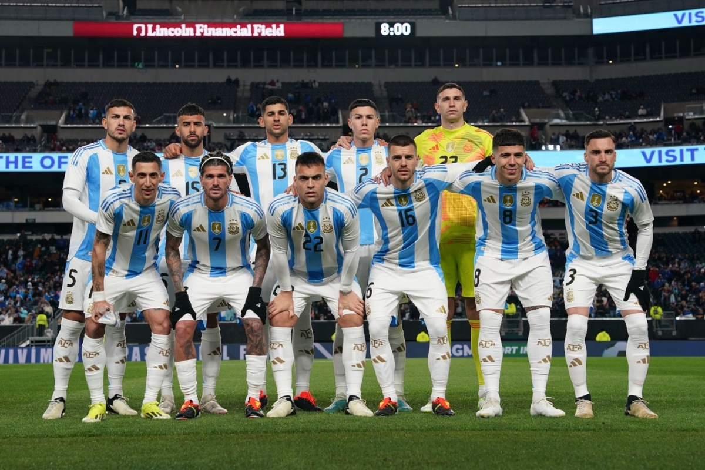
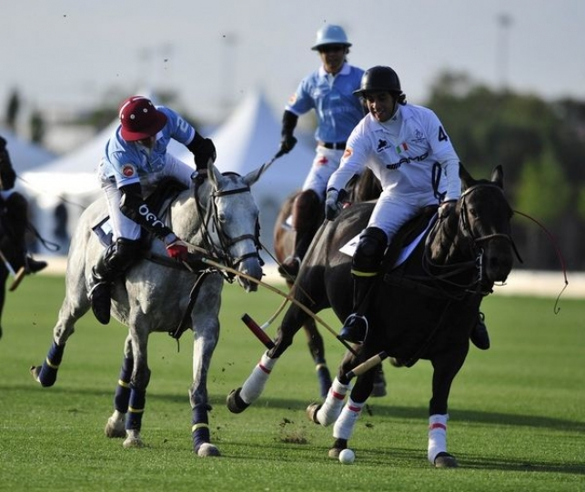
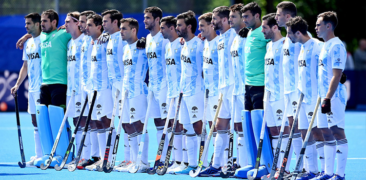
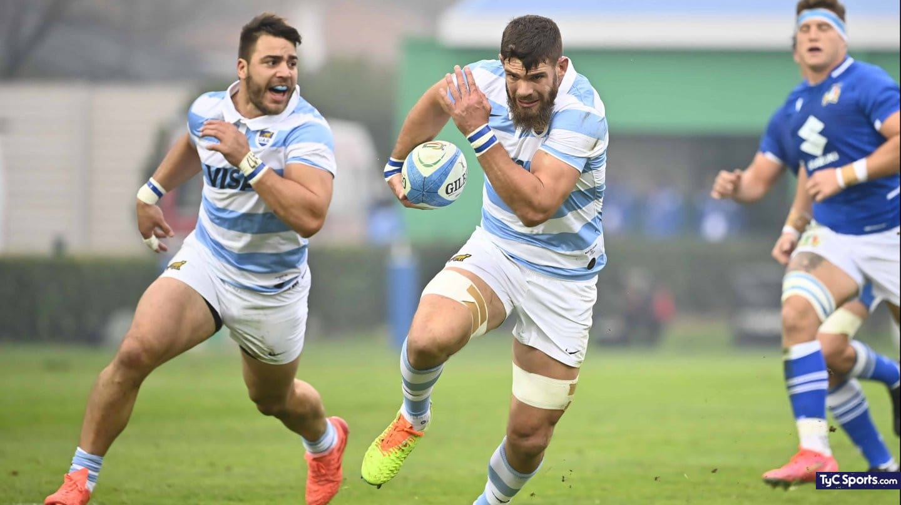
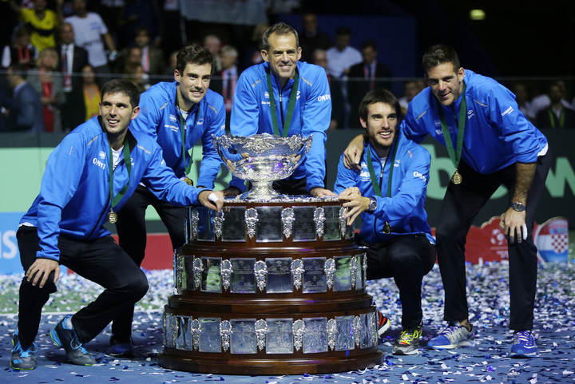

Deportes en Argentina
Fútbol
El fútbol es el deporte más popular en Argentina. La pasión por el fútbol se refleja en equipos como Boca Juniors y River Plate, y en la selección nacional, ganadora de la Copa del Mundo en varias ocasiones.
Polo
Argentina es conocida mundialmente por su tradición en el polo. El Abierto de Palermo es uno de los torneos más prestigiosos del mundo, donde participan los mejores equipos de polo.
Hockey sobre césped
El hockey sobre césped femenino argentino ha alcanzado grandes éxitos internacionales, con múltiples medallas olímpicas y mundiales. Las Leonas son una potencia en este deporte.
Rugby
El rugby tiene una fuerte presencia en Argentina, destacándose la selección nacional de Los Pumas y los clubes locales. Argentina ha competido en el Rugby Championship y en la Copa del Mundo de Rugby.
Tenis
Argentina ha producido grandes tenistas como Guillermo Vilas, Gabriela Sabatini y Juan Martín del Potro. El Abierto de Argentina es un evento destacado en el calendario tenístico internacional.
